A journey of a thousand miles begins with one step - and a stuffed suitcase.
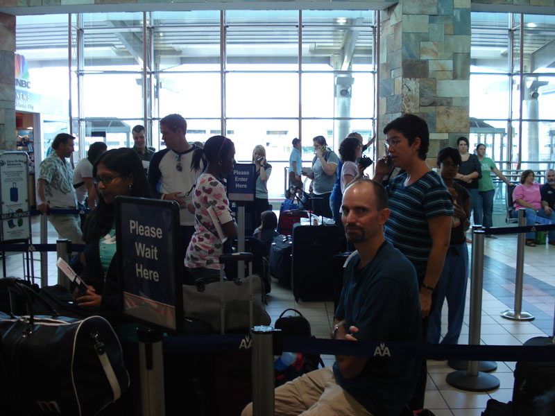
We were picked up by Pastor David & family Sunday July 29th around 3pm. Here we are in line to check in for our first flight to Dallas.
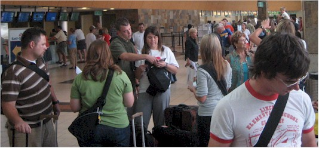
Terry, Jessica, Andrew, Allison, Shelby, and Joe - getting ready
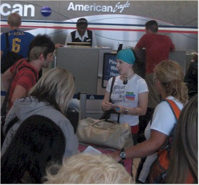
Misty, Josiah, Carley, and Autumn anxious to get this show on the road
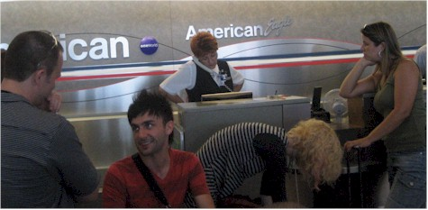
Uh-oh, this is our first sign of trouble
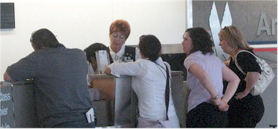
This is the American Airlines lady informing us that AA had cancelled the first of our 4 flights of the day. This had the effect of making us miss the other 3 flights and caused a $5,000 penaltywith China Air that the church had to pay. Unhappy news! We had all agreed before the trip that we were in control of our attitudes and that we would maintain a good one throughout the trip. We just didn't know we'd have to start working at it so soon!!!
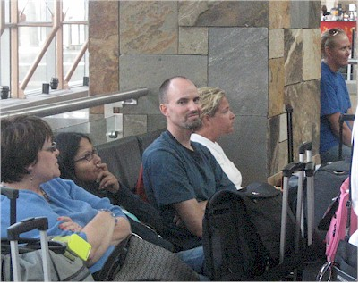
Here's Eric, deciding to remain happy.

Everyone else, also trying to remain happy. We were in this part of the OKC airport for 5 hours, then we all went back home.

The next day we left in 3 groups of about 10 in each group. We were in the first group. At this point we were told we could only go as far as Tai Pei and would be stuck there 4 days. We pressed on, believing that a way would be made for us.
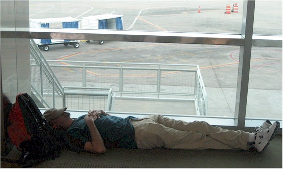
Our first flight was delayed so Eric made the most of the wait.

Here we are, shortly before leaving on our first flight.

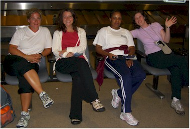
Two shots of these lovely ladies, happy to have made it as far as L.A. Autumn, Bethany, Catina, and Bobby
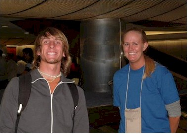
It took a very long time to get our bags for some unknown reason, but we're happy!

Bethany makes a close examination of the offerings in the food court at LAX. I hope she doesn't plan tolook this closely at our food in Cambodia!

We had arrived at the OKC airport around 10am Central time, by now it was 11pm Central. Our next flight was to leave at 3:30am Central time - good times!
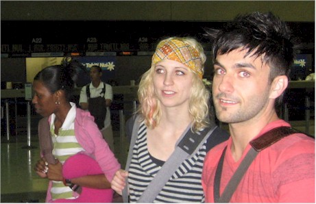
Group 2 has arrived! Group 3 cut it close and sadly, the luggage did not make it.

This guy was a riot. He ran the line at the China Air check-in desk with an iron fist and a heart of gold.
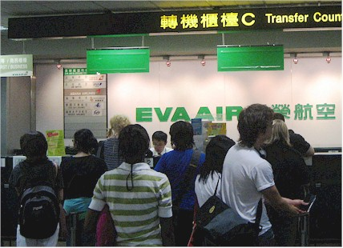
Here we are at Eva air, watching a miracle happen as they put us all on a flight that we had no prior reservations for. China Air said they transferred us to Eva air, but they couldn't find our record when we first arrived. Scary!
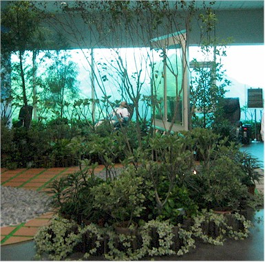
This was called a "quiet zone" in the Taipei airport - there are recliners in the back. We needed this in LAX on the way home!

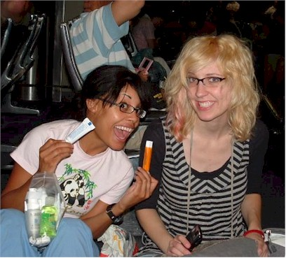
Preparing for the last flight from Taipei to Cambodia.
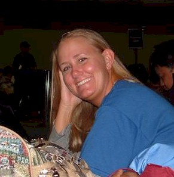
Gretchen, looking great even when we're exhausted.

Joe & Pastor David, clowning around.

I actually saw a Sea Turtle, but it was so deep the picture didn't turn out.

I love the guy on the left, he loves his job! (He inspires confidence, too!)
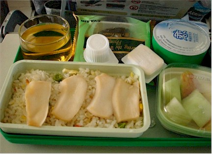
The Asian meal option on the flight

Trying to get a shot of Terry's fancy carry-on luggage.

Cambodia from the air.
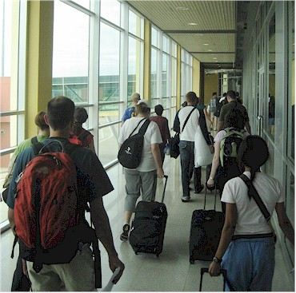
We're finally here!
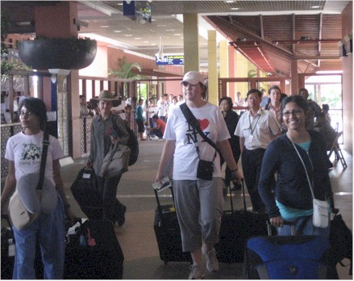
We've cleared customs and discovered that not all of the bags made it.
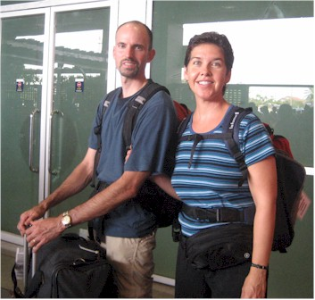
Man, we're tired by this point.
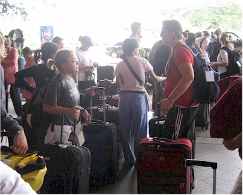
Our first 'hurry up and wait' experience in Cambodia - we stood outside the airport in the heat for over an hour awaiting our ride to the hotel.
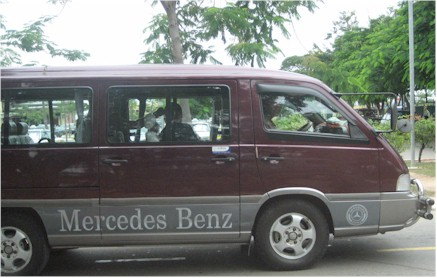
Our chariots are here! Six vans took us everywhere for the next two weeks.
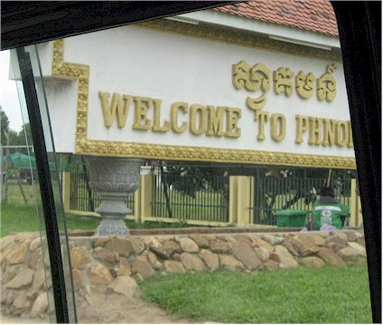
The Phnom Penh welcome sign.

Our first views of typical street-front businesses.

Our first views of the amazing side-saddle skills of the Cambodian ladies
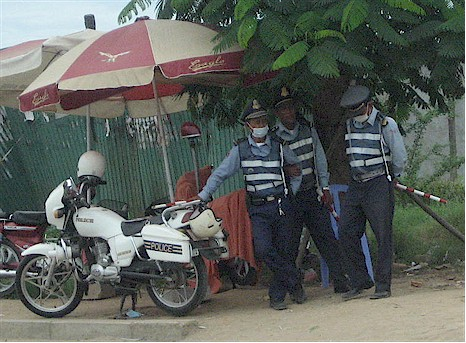
Our first brush with the authorities. Thankfully, we just saw them in passing.

It was amazing how many people and things they can cram onto a "moto."

Poverty was the norm except for the pagodas, they were very elaborate.

They called motorcycles "motos" and there were thousands of them
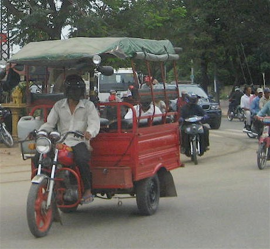
Many had been modified to serve other purposes.

We saw every strange thing being hauled in the strangest ways.
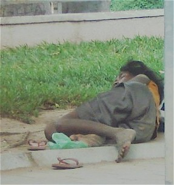
We saw sad sights like this boy sleeping on the street as well.
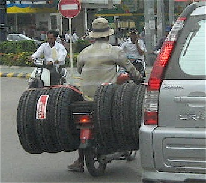
I believe we saw every part of a car being hauled on a moto at some point during the trip.
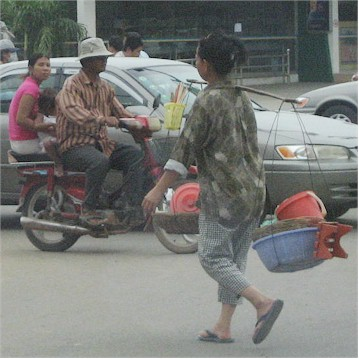
Lady carrying a balanced set of baskets
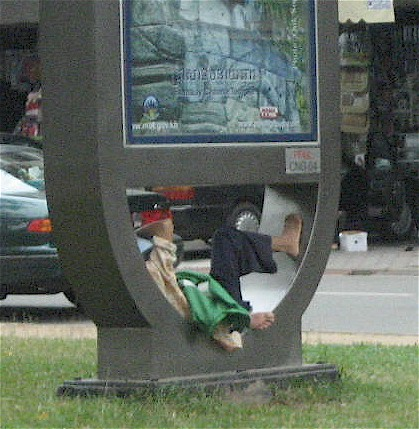
This man thought the city built this cement hammock just for him
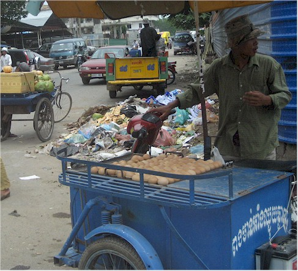
Dump your trash and buy an egg, all on the same corner.

This was a big piece of glass - we didn't even want to imagine this scene if there was a wreck.

A nice public area.

Our first glimpse of our hotel - 36 hours after leaving OKC.

Looks pretty good to us!
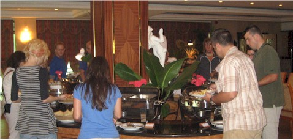
The dining room was very nice with a huge variety, so we never minded eating all of our Phnom Penh meals here.

Tired people, trying not to fall asleep in their food.

This mosque was right outside our room.

These houses were built on the marshy area behind the hotel.
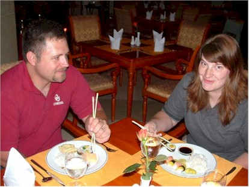
We ate with Terry & Jessica Cox that day.

Tired girls. The worst part was knowing that we needed to stay awake for the next 8 hours or so. That was hard!
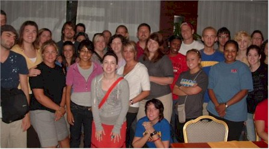
Here we are at dinner (that red arm on the right is me, Eric is cut out completely.) We're happy because after this we finally get to go to sleep!!!

A family and their things hitting the road.

This lady played music in the lobby. It was almost noon when we arrived and our rooms were not ready so we headed to a very welcome lunch.